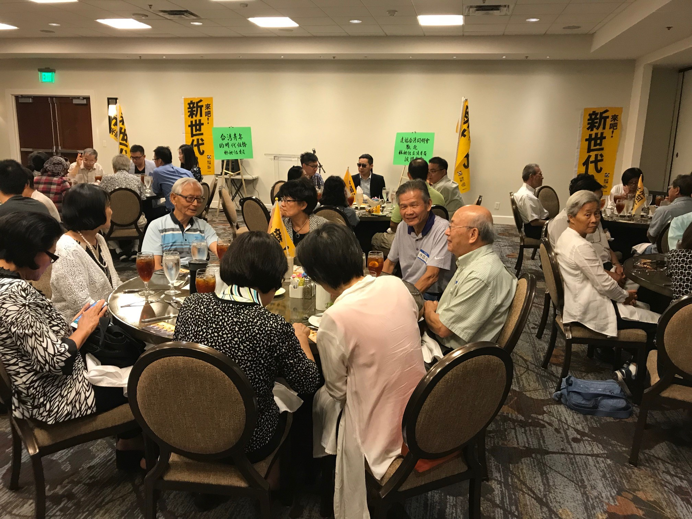

時代力量立委林昶佐先生演講餐會會後新聞稿
台灣立法委員林昶佐先生在前往華盛頓特區領取 「廖述宗教授紀念獎」途中，抱恙參加達福台灣同鄉會主辦，於達拉斯喜來登飯店（Sheraton Dallas Hotel by the Galleria）舉行的演講餐會，林委員在餐會前一個多小時因眼睛結膜炎極度不適到急診間接受抗生素及類固醇注射，因此全程帶著太陽眼鏡，但看到現場約八十多位台灣鄉親熱情的支持，立即精神振奮，勉力完成一場精彩的演講。
此次演講的主題為「台灣青年的時代任務」，一開始林委員先陳述其在「閃靈樂團」2007年於美國巡迴演唱時接受台灣鄉親的幫助支持，所感受到台灣鄉親不同於其他國家的凝聚力，正是因為大家致力於推動使台灣成為一個國際認同的國家所致。及至2008年馬英九當選總統時，雖然不少人感到失望，但他對馬英九的「作為」能夠為台灣人凝聚的向心力深感信心，也常應台灣鄉親的邀請到美國演講， 闡述其看法，而這些在之後的318學運、周子瑜事件及2016年蔡英文當選總統等等，皆可以印證在馬執政八年後，台灣認同並沒有消失，反而加深。
林委員接下來提到時代力量希望促成台灣走向正常的兩黨政治（Bipartisan），他說台灣未來的兩黨應該都是 pro Taiwan，不讓親中、主張統一的國民黨有機會再繼續執政。兩黨其中一黨是比較保守 （Conservative），如美國的共和黨或是民進黨，而另外一個黨是比較自由開放 （Liberal），如美國的民主黨或是時代力量，他並提到他上任以來所推行主張的自由開放政策法令，如成功的提案廢除蒙藏委員會、積極在外交上推動去中國化、不使用中華民國以免混淆國際視聽、刪除台灣省政府預算、支持同性婚姻（LGBT Rights）、裁併僑務委員會等等。其間林委員也介紹了2018年底台北市議員選舉時代力量所推出新世代市議員參選人們。
在演講之後的Q & A，林委員與台灣鄉親對其他廣泛議題如政黨合作、中國經濟對台灣的經濟侵略等等交換意見，並勉勵台灣年輕人身為網路世代，面對政治議題不要隨網軍起舞，要設法找出還原事實的真相，加以散播，並要找出自己喜歡做的事，並做到最好。
這場演講餐會歷時約三個半小時，在最後林委員親切地與鄉親簽名、拍照，鄉親們踴躍捐款支持中圓滿落幕。
